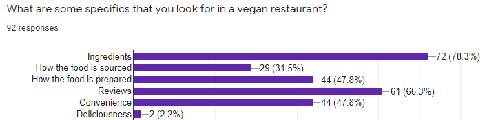
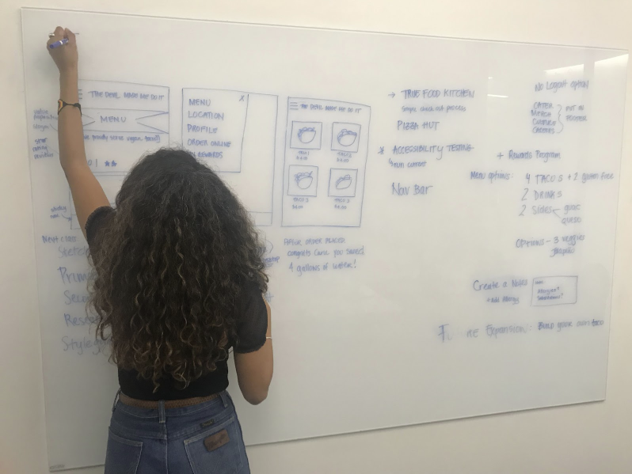
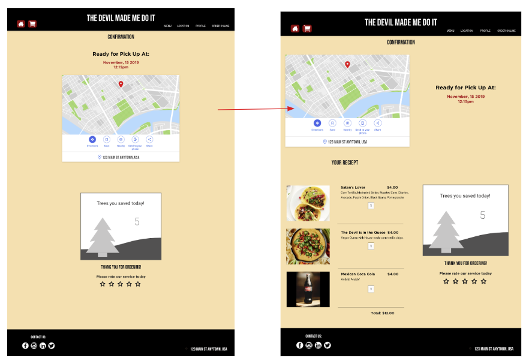

The Devil Made Me Do It
Microsite for Torchy's Tacos
Role: UX | UI Designer + Lead Developer
The Devil Made Me Do It is a microsite of the well known brand, Torchy's Tacos. This site would introduce an intuitive checkout process for Torhcy's all vegan and plantbased menu.
The focus for this site was to offer a Torhcy's brand option for plant based customers that find it difficult to order from Torchy's while pleasing their dietary needs,
to provide Torchy's with a otherwise missed customer base,
and to improve the checkout process of the Torchy's Tacos website.


My team began our research with a stakeholder interview
Three main goals from this interview were to
1) Reach a new market that is profitable and fits into the Torchy's brand
2) Create a seamless checkout process
3) Start with a small menu.
We then moved on to user interviews and surveys

We then analyzed these finding
By creating an Affinity Diagram our team could see all main points from all research laid out into categories of concern or focus
We then put that information into an Empathy Map to really understand and empathize with our user's feelings
The concensus from this research was unanimous! Plant Based customers find ordering online to be very difficult.
Some reasons for this issue include having to customize orders to meet their dietary needs but the order still comes out incorrect,
customers feel judged and like a burdon when asking for subsitutes or corrections, and not being able to trust that all ingredients are truly vegan.

This data helped develop The Devil Made Me Do It's target user, Jenny Love.

Problem Statement:
By creating The Devil Made Me Do It, a vegan Torchy’s spinoff brand, with a fully customizable, intuitive checkout process we give customers with a plant-based diet a safe space to feel confident and at ease about ordering.

User Scenarios and Storyboards helped guide the design process while keeping the user in mind.
We then conducted research on what features were most important in achieving the site's goals.
SWOT Analysis
We determined that the priority features needed for this app would be Customization Cards for the menu, vegan enviromental facts, estimated wait times, and customer reviews and feedback.

With a clear idea of what feautures are neccessary we created a user flow. This tells us how the user will move throughout the site.
The UI Design process began with sketches. This makes an easy edit process but allows us to quickly test our features impact on the user.

Our team then produced low and mid fidelity mockups for user testing.

Our testing plan consisted of users adding three menu items to their cart then checking out with an error in the checkout process. This took the user throughout the entire site and even showed them what would happen if an error were to occur, and showed us how that error would affect the user and checkout process.
We also executed some A/B testing to determine where certain features should land

One requirement set by the stakeholder was to stick to the Torchy's vibe and color palette but to create a new look. Our team developed a Mood Board and Style Guide with Torchy's Tacos as inspiration
Next we conducted color and accessebility testing. Torchy's Tacos did not have any Alt text on their images. We felt like this was a very important feature to include.

The Devil Made Me Do It is a mircosite of Torchy's Tacos that offers a plant based menu to all of the hungry little devils out there.
Users can easily select, customize, and confirm their orders knowing that it will be correct and fit their dietary needs.
This site provides a safe space for plant based customers to feel confident and at ease about ordering online.
:)